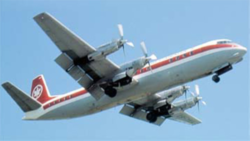

Vanguard

- Разработчик: Vickers
- Страна: Великобритания
- Первый полет: 1959
- Тип: Среднемагистральный пассажирский самолет
Vanguard V950 — это британский турбовинтовой авиалайнер, разработанный и производившийся предприятием Vickers-Armstrongs. Самолёт был создан для линий средней и малой протяжённости и впервые поднялся в воздух в 1959 году. Было произведено 46 самолётов Vanguard V950, которые эксплуатировались в пассажирском и грузовом вариантах. Последний самолёт был выведен из эксплуатации в 1996 году.
| Летно технические характеристики | |
|---|---|
| Модификация | V.950 |
| Размах крыла максимальный, м | 36.14 |
| Длина, м | 37.45 |
| Высота, м | 10.64 |
| Площадь крыла, м2 | 141.86 |
| Масса, кг | |
| - пустого самолета | 137421 |
| - нормальная взлетная | 63977 |
| Тип двигателя | 4 ТВД Rolls-Royal Tyne RTy.11 Mk 512 |
| Мощность, л.с. | 4 х 5545 |
| Крейсерская скорость, км/ч | 684 |
| Практическая дальность, км | 2977 |
| Практический потолок, м | 9145 |
| Экипаж, чел | 5 |
| Полезная нагрузка: | максимально - 139 пассажиров |